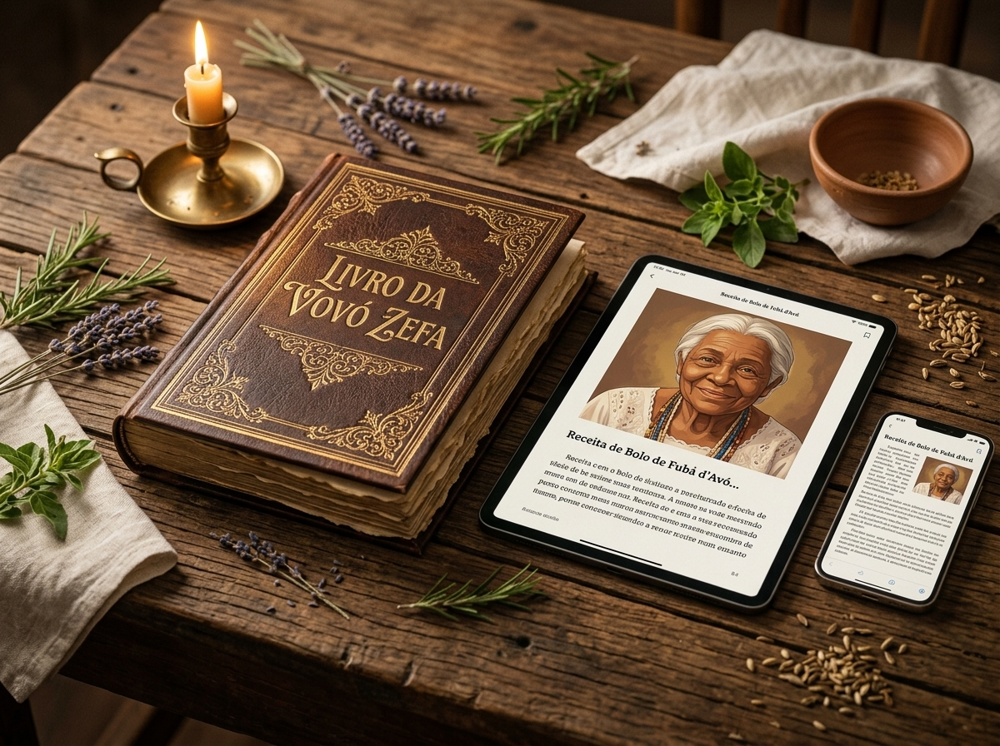
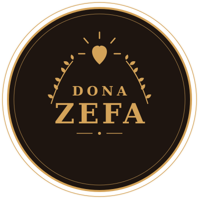

Caminhos e Vida Financeira
Às vezes é o dinheiro que parece não andar.
Eu sou a Vovó Zefa. E o que eu não consigo contar todo em poucos segundos, eu quero te contar agora.
Você já me viu falando de bênção, de proteção, de amor. Já me viu acendendo a vela, já me viu com o livro antigo na mão.
O que eu quero te mostrar agora é a continuação dessa conversa.
Às vezes é o dinheiro que parece não andar.
Às vezes é o coração que fica apertado por causa de alguém.
E às vezes é aquela sensação de inveja, olho gordo ou de uma energia pesada por perto.
“Se você já sentiu alguma dessas coisas, filha, eu sei como é importante ter um cuidado, uma reza ou um ensinamento para recorrer quando precisar.”
Nos vídeos, eu compartilho um pedacinho de cada vez.
O conteúdo aparece no feed, você assiste, às vezes guarda na memória… mas o vídeo passa e depois pode ser difícil encontrar de novo quando você mais precisa.
Por isso eu reuni meus ensinamentos em um livro. Um material organizado em capítulos para você guardar no celular e consultar quando quiser.
É conhecimento, tradição e fé reunidos em um só lugar.
Eu sou a Vovó Zefa.
O que eu compartilho vem dos ensinamentos que aprendi com os mais velhos — simpatias, rezas e cuidados que atravessaram gerações.
“Você não precisa chegar aqui sabendo tudo. Nem precisa entender de tudo.”
É só sentar, ouvir e conhecer aquilo que eu aprendi e hoje compartilho com você.

Conheça o Livro da Vovó Zefa.
Reunindo as simpatias, rezas e ensinamentos que você já conhece dos vídeos, mas agora organizados de forma clara e prática para consultar quando precisar.
Filha, esse é um livro digital em PDF com letra grande. Não precisa esperar correios e não paga frete. Assim que a sua compra for confirmada, você recebe o acesso na hora no seu e-mail para abrir e guardar para sempre.
O livro foi organizado para ser simples de acompanhar e confortável de ler.
Um conteúdo dividido em capítulos para facilitar a consulta.
Conteúdos relacionados aos três grandes temas da Vovó Zefa: Dinheiro • Amor • Proteção
Um formato pensado para uma leitura mais confortável.
Você baixa o material no celular, tablet ou computador e acessa sempre que quiser.
Tudo reunido em um livro organizado em 15 capítulos com letra grande, para você guardar no celular e consultar quando quiser.

Se por qualquer motivo você achar que o livro não é para você, basta pedir o reembolso em até 7 dias. Simples, sem complicação.
Tudo o que você precisa saber antes de ter o seu livro.
É um livro digital (e-book em PDF). Você recebe o arquivo diretamente no seu e-mail e pode ler no celular, tablet ou computador, sem pagar frete e sem esperar entrega.
Assim que o pagamento for confirmado, você recebe no seu e-mail um link para baixar o livro na hora.
O processo é muito simples: basta clicar no link que você vai receber. Se precisar de ajuda, temos um suporte pronto para orientar você passo a passo.
Não. O livro foi escrito em linguagem simples, com passo a passo claro, pensado justamente para quem quer aprender do zero ou ter os ensinamentos organizados para consultar.
Se dentro de 7 dias você achar que o material não é o que você esperava, basta entrar em contato e o valor pago será devolvido integralmente.
O material reúne simpatias, rezas e ensinamentos tradicionais compartilhados pela Vovó Zefa. A forma como esse conteúdo deve ser praticado ou interpretado fica a critério de cada pessoa e de sua própria fé.
Nos vídeos, você encontra os conteúdos enquanto eles passam pelo seu feed. O livro reúne o material em um formato organizado, que você pode guardar e consultar novamente quando quiser. Não é preciso depender de encontrar novamente aquele vídeo.
Sim. A compra é processada pela Kirvano, uma plataforma segura e confiável de produtos digitais. Seus dados são protegidos e o pagamento é 100% seguro.
Eu reuni esses ensinamentos com carinho para deixar esse conhecimento organizado em um lugar que você possa guardar.
Se você chegou até aqui porque algum dos meus vídeos falou com você, agora pode levar um pedacinho dessa conversa para dentro da sua casa.
Que esses ensinamentos tragam paz, amor e caminhos abertos para você.
Com carinho e bênçãos,
✦ Vovó Zefa ✦